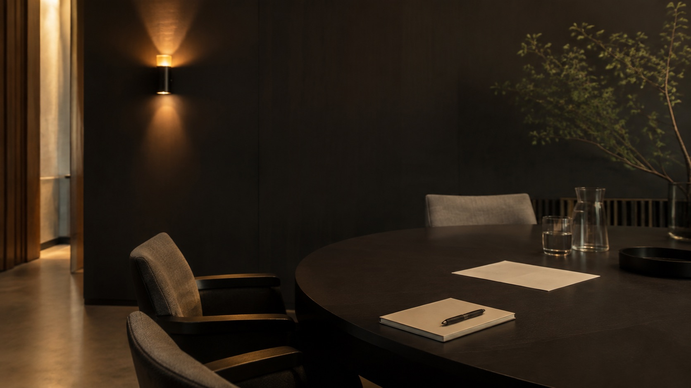

My team is curious about AI, but uncertain and uneven.
Some are excited. Some are skeptical. Most need shared language.
Invite · One conversation can change the room
Speaking, advisory and structured working sessions all begin the same way: you describe the room, the pressure and the change you want. If I am the right fit, we move. If not, I will say so plainly.
I read every message myself. Short reply within one working day.
Real rooms. Real problems. A clearer way forward.
Some are excited. Some are skeptical. Most need shared language.
Use cases, workflow, governance, confidence — not just hype.
Tools exist, but ownership, process and logic are unclear.
One room, different assumptions, no common map.
From conversation to progress.
A keynote or session that gives the room language, clarity and momentum.
A focused conversation or review to identify what should happen next.
A deeper engagement around systems, workflow, architecture or internal capability.
Available for public sector, education, corporate, founder and community rooms.
“Technology should not merely become more powerful.
People should.”
That is the standard every room should be measured against.
Direct access
Prefer email? Tell me what is happening in the room and what you want to change.
saiffil@maxx.my